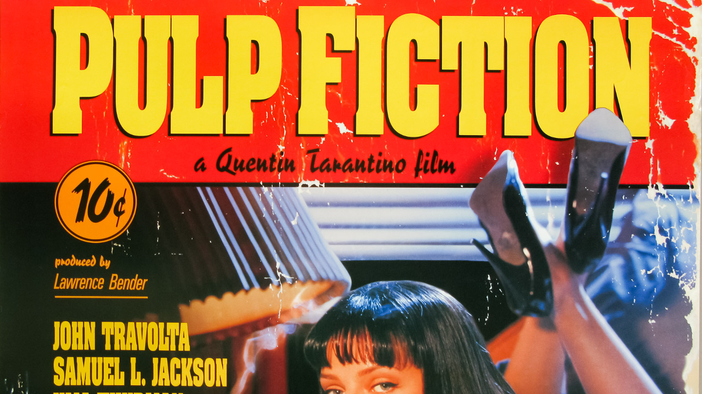
Pulp Fiction
8.9/10
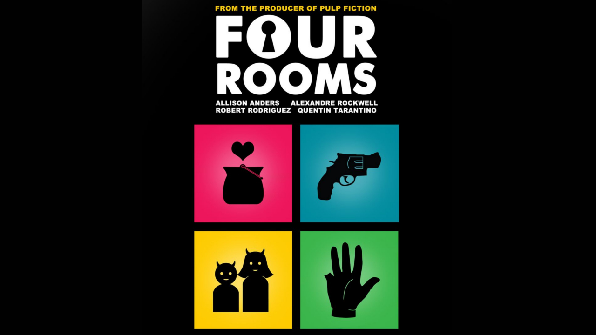
Four Rooms
6.8/10
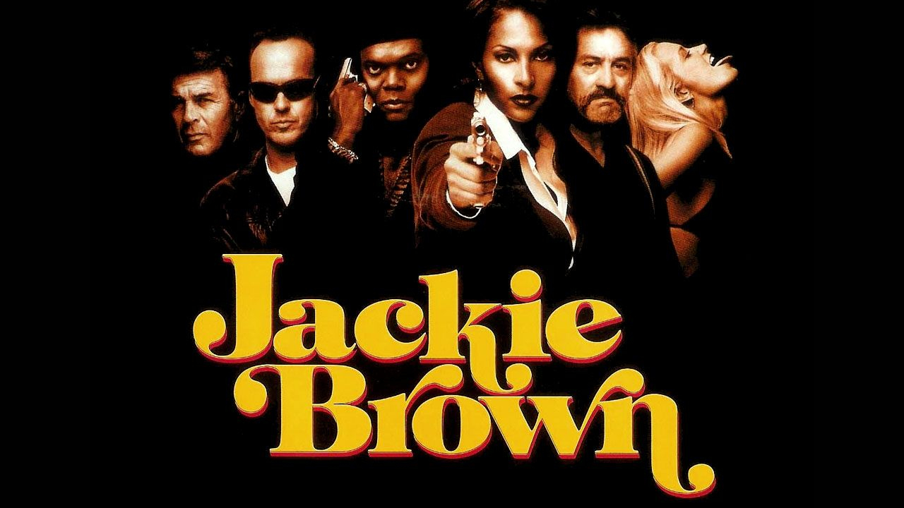
Jackie Brown
7.5/10
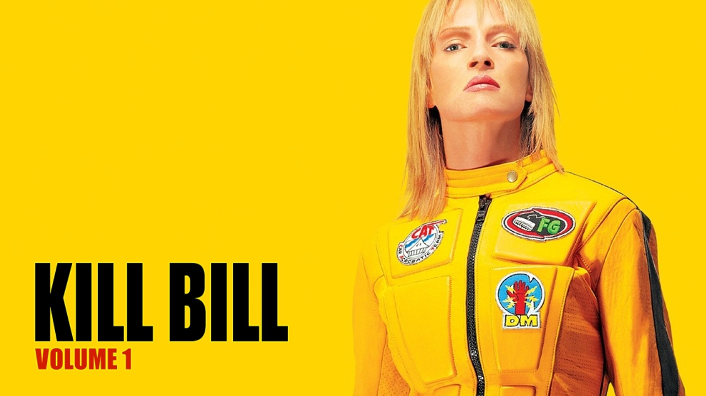
Kill Bill Vol.1
8.1/10
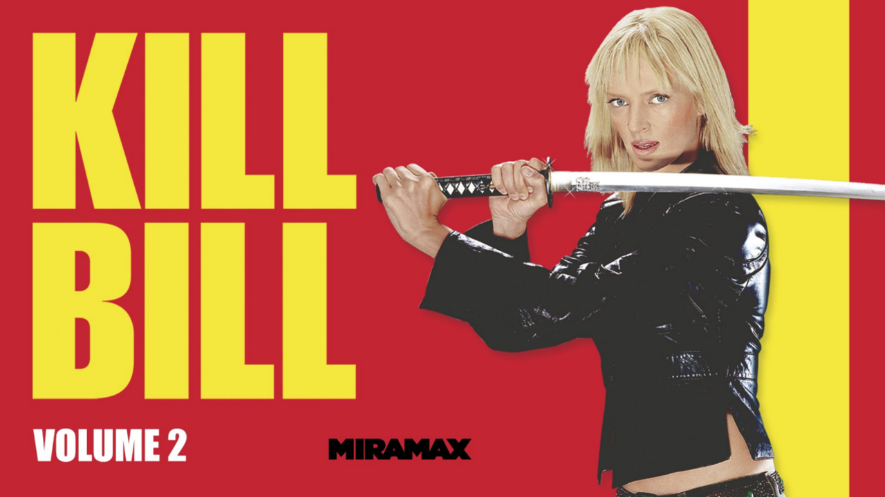
Kill Bill Vol.2
8.0/10
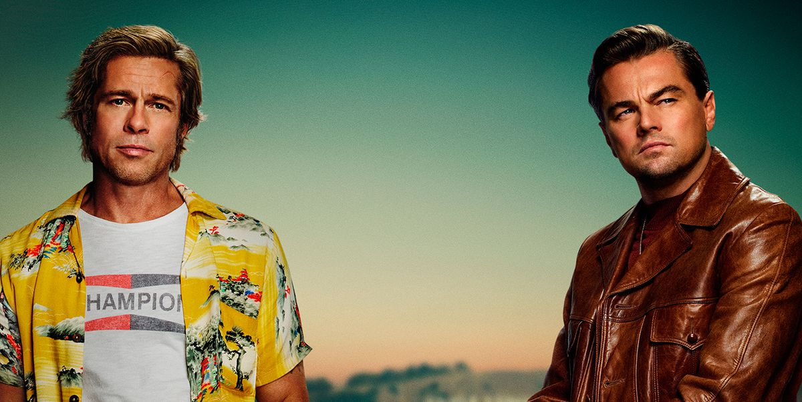
Érase una vez en Hollywood
Ambientada en Los Ángeles en el turbulento verano de 1969, la novena película de Quentin Tarantino gira alrededor de Rick Dalton, una antigua estrella de westerns televisivos. Dalton, junto a su doble de acción de toda la vida, Cliff Booth, lucha por hacerse un hueco en un Hollywood que ambos ya no reconocen. Pero Dalton tiene una vecina muy especial... Sharon Tate. El asesinato de Tate y sus cuatro amigos a manos de los seguidores del culto de Charles Manson sirve como telón de fondo a la historia principal. El consagrado Quentin Tarantino ('Malditos Bastardos', 'Django Desencadenado') dirige un reparto en el que podemos encontrar grandes estrellas como Leonardo DiCaprio, Brad Pitt, Margot Robbie, Dakota Fanning, Al Pacino, Margaret Qualley y Victoria Pedretti, entre otros.
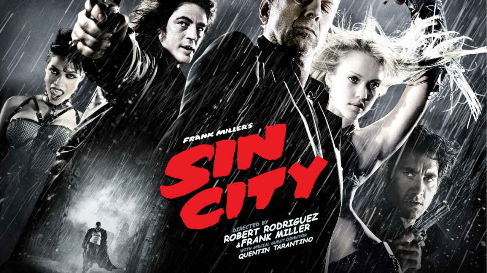
Sin City
8.0/10
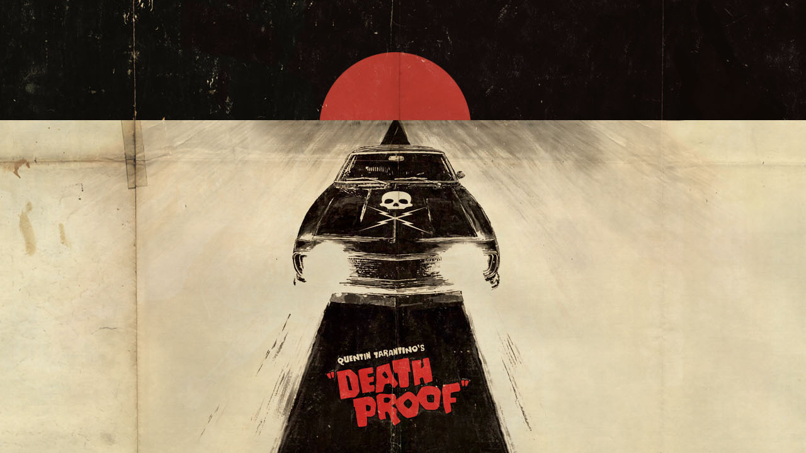
Death Proof
7.0/10
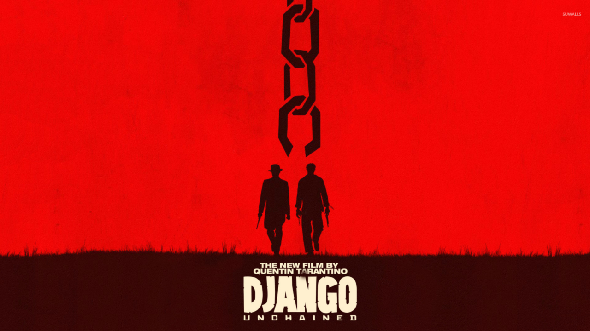
Django Desencadenado
8.4/10
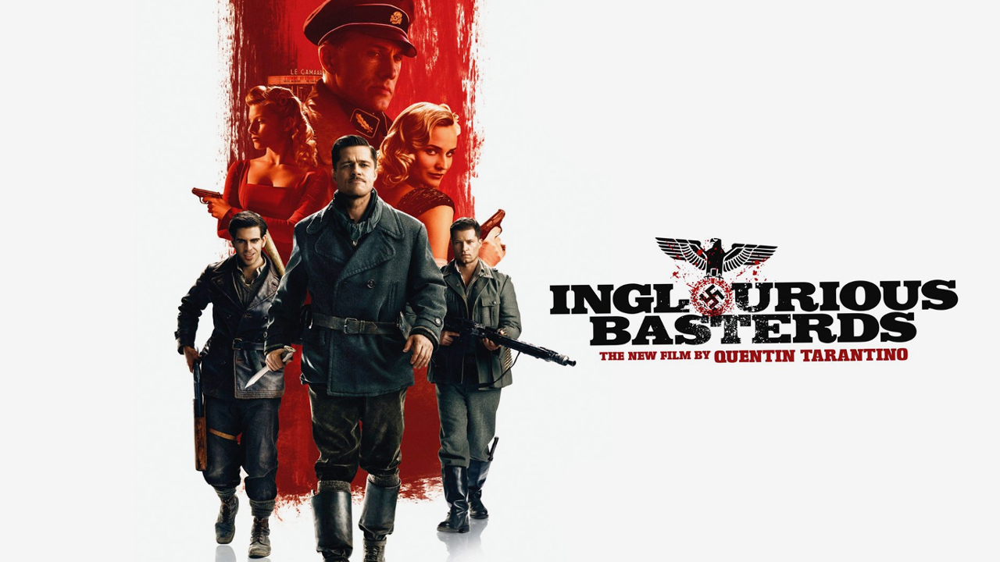
Malditos Bastardos
8.3/10
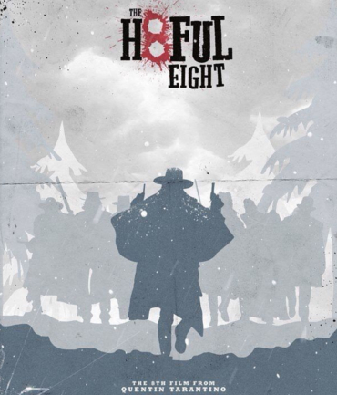